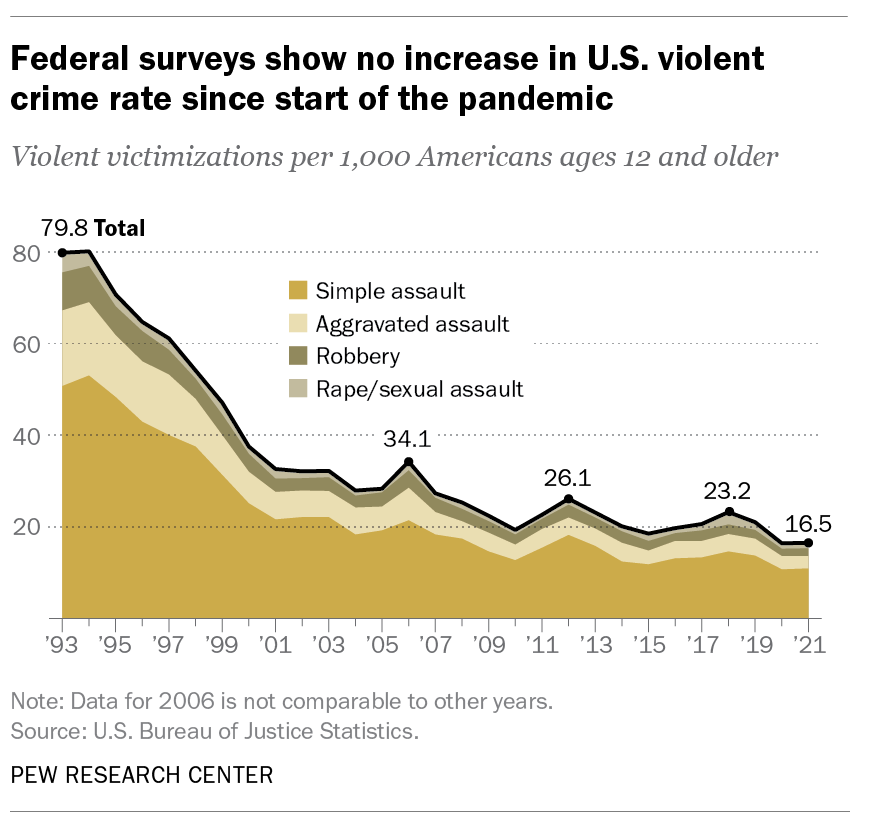
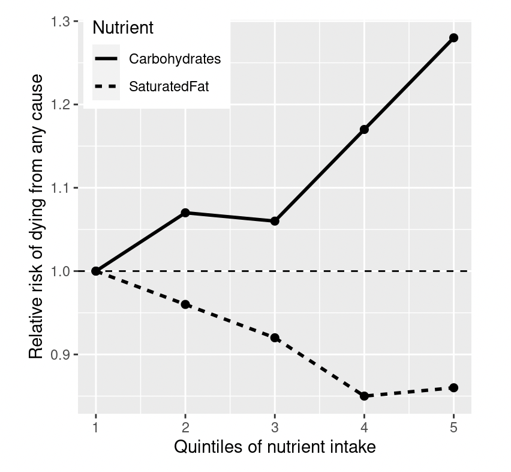

Previous: Chapter 1 - Intro to Doing Statistics
Chapter 2 - Statistical Thinking#
“Statistical thinking will one day be as necessary for efficient citizenship as the ability to read and write.” - H.G. Wells
2.1 Introduction#
Life is messy and complex - things like people, animals, weather, even microscopic bacteria can vary between each other in a multitude of ways, for a multitude of reasons. How do we make sense of this complexity and still describe our world in reasonably accurate ways? Statistics is the discipline that helps us with this - it is how we turn variation in the world into variation in data, and how we analyze that data in order to give us answers about the essential structure or function of the world.
The foundations of statistics come primarily from mathematics, but also from computer science, psychology, and other fields of study. From this interdisciplinary crucible, statistics has emerged as not just a collection of facts or equations. Statistics is a way of thinking, distinct from other approaches to knowledge. In particular, statistics can answer the sorts of questions where human intuition fails.
For example, in recent years political ads have emphasized violent crime as a problem in the US, and most Americans have reported that they see violent crime as a serious societal issue (Pew Research Center). However, a statistical analysis of the actual crime data shows that in fact violent crime has steeply decreased since the 1990’s. Intuition fails us because we rely upon best guesses (which psychologists refer to as heuristics) that can often get it wrong. In this case, humans often judge the prevalence of some event (like violent crime) using an availability heuristic – that is, how easily can we think of an example of violent crime. For this reason, our judgments of crime rates may be more reflective of increasing news coverage and political discourse, in spite of an actual decrease in the rate of crime. Statistical thinking provides us with the tools to more accurately understand the world and overcome the biases of human judgment.
Graph from the Pew Research Center showing the number of violent victimizations per 1,000 Americans age 12 and older in each year between 1993-2021, and that number broken down into different categories of violent crime (simple assault, aggravated assault, robbery, and rape/sexual assult). In all categories, the number of incidents has declined since 1993.
2.2 What can statistics do for us?#
There are three major things we can do with statistics:
Describe: The world is complex and we often need to describe it in a simplified way that we can understand.
Predict: We often wish to make predictions about new situations based on our knowledge of previous situations.
Infer: Beyond knowing what is likely to happen, we also try to understand why it happens.
Let’s look at an example of each of these use cases in action.
Describe#
How do we know what’s healthy to eat? There are many different sources of guidance; government dietary guidelines, diet books, and bloggers, just to name a few. Let’s focus in on a specific question: Is saturated fat in our diet a bad thing?
One way that we might answer this question is common sense. If we eat fat, then it’s going to turn straight into fat in our bodies, right? And we have all seen photos of arteries clogged with fat, so eating fat is going to clog our arteries, right?
Another way that we might answer this question is to look at actual data on the subject. One large-scale study, called the PURE study, examined diets and health outcomes (including death) in more than 135,000 people from 18 different countries. In one of the analyses of this dataset (published in The Lancet in 2017; Dehghan et al. (2017)), the PURE investigators reported how intake of various classes of macronutrients (including saturated fats and carbohydrates) was related to the likelihood of dying during the time that people were followed. The plot below displays some of the data from the study (extracted from the paper), showing the relationship between the intake of both saturated fats and carbohydrates and the risk of dying from any cause.
A plot of data from the PURE study describing death rates among people based on the amount of saturated fats and carbohydrates they intake. The death rate seems to increase for larger amounts of carbohydrates, and slightly decrease for larger amounts of saturdated fats.
Don’t worry if this plot is hard to read at this time - you’ll get there! For now, notice the ten points where the lines run through. To obtain the numbers represented by these points, the researchers split the group of 135,335 study participants (which we call the sample) into 5 groups based on how much they ate each type of nutrient (carbohydrates and saturated fats). The first group contains the 20% of people with the lowest intake, and the 5th group contains the 20% with the highest intake. The researchers then computed how often people in each of those groups died during the time the study was conducted. The figure expresses this in terms of the relative risk of dying in comparison to the lowest group: If this number is greater than one, it means that people in the group are more likely to die than are people in the lowest group, whereas if it’s less than one, it means that people in the group are less likely to die. According to this figure, people who ate more saturated fat had lower relative risk of death during the study. The opposite is seen for carbohydrates; the more carbs a person ate, the higher the relative risk of death during the study.
This example shows how we can use statistics to describe a complex dataset in terms of a much simpler set of numbers. It would be very hard to tell the relative risk of death for a particular carbohydrate intake level by looking at the whole dataset at once (135,335 points of data!). By using statistics, we can aggregate and compare sets of information to make the takeaway information easier to see. Specifically, the family of statistical tools that help with this kind of insight is called descriptive statistics.
Predict#
These data help us see what relative death risk one can expect based on one’s intake level of saturated fats or carbs. But these numbers describe the people in the PURE study specifically. We might also want to make predictions about other people not included in the dataset, or outcomes that haven’t happened yet. For example, a life insurance company might want to guess how long someone is likely to live in order to set their premium amount. They base that prediction on some combination of information about the person, and this can include information about their intake of fat and carbohydrates. The type of statistics that help us make predictions about new data are known as predictive models.
If we are to make predictions about new people, it’s important that our predictions are good. You wouldn’t want to trust a model that did no better than if you were to randomly guess a group’s relative risk of death. You also wouldn’t want to use a model that was based only on a particular group of people, like vegetarians, as that might not apply to people with other sorts of diets. In addition to building predictive models, statistics also gives us the tools to evaluate these models’ predictive accuracy.
Infer#
The numbers in this figure seem to show that some groups of people have different relative risks of death. Why? If your answer included the work “because”, then you just made an inference - a guess about the process that generated these death risk data. In this case, it looks like consumption of fat and carbohydrates at least partially explains why someone has a lower or higher risk of death. Given this information, we might decide to make changes in our own lives in order to influence our own risk of death.
But we also know that there is a lot of uncertainty in these data; there are some people who died early even though they ate a low-carb diet, and some people who ate a ton of carbs but lived to a ripe old age. Given this variability, we want to decide whether the patterns that we see in the data are large enough that we wouldn’t expect them to occur randomly if there was not truly a connection between diet and longevity. In other words, we want to be confident that the pattern we are seeing is real, and that carbohydrates are very likely the reason for this increased risk in death.
Often people from the outside view these kinds of insights as absolute answers - we are prooving a relationship between diet and death risk, or that one causes the other. But as we will see throughout the course, this need for black-and-white decisions based on fuzzy evidence has often led researchers astray. Thus, there are also methods within statistics to tell us how confident we can be with our conclusions, known as inferential statistics.
2.3 The big ideas of statistics#
Since statistics is a way of thinking, there are some basic principles that are important to remember for doing statistics well.
Learning from data#
At its core, statistics is the pursuit of knowledge via data. In any situation, we start with a set of ideas or hypotheses about what might be the case. In the PURE study, the researchers may have started out with the expectation that eating more fat would lead to higher death rates, given the prevailing negative dogma about saturated fats. Maybe they also had their own experience dealing with health problems while on a high-fat diet. But this hypothesis is not where the researchers stopped - they collected many data points to test it. In the end, the patterns in the data revealed a different reality. Data thus can help us solidify our beliefs, update them, or even inspire new ideas. It is the central currency of doing a science like psychology.
Aggregation#
Although you do statistics using data, another way to think of the process is how best to throw away data. In the example of the PURE study above, we took more than 100,000 numbers and condensed them into ten. It is this kind of aggregation that is one of the most important concepts in statistics. When it was first advanced, this was revolutionary: If we throw out all of the details about every one of the participants, then how can we be sure that we aren’t missing something important? As we will see, statistics provides us ways to characterize the aggregates of data in a way that still preserves information about the total. However, it’s also important to keep in mind that aggregation can go too far, and later we will encounter cases where a summary can provide a very misleading picture of the data being summarized.
Sampling from a population#
The concept of aggregation implies that we can make useful insights by collapsing across data – but how much data do we need, and from who? The idea of sampling says that we can reliably summarize an entire population based on a small number of data points from the population, as long as those data are obtained in the right way. For example, the PURE study enrolled a sample of about 135,000 people, but its goal was to provide insights about the billions of humans who make up the population from which those people were sampled. The way that the study sample is obtained is critical - it determines how broadly we can generalize our results. Another fundamental insight about sampling we will learn about is that while larger samples are always better (in terms of their ability to accurately represent the entire population), there are diminishing returns as the sample gets larger.
Operationalization#
Think of the statement “dogs are good pets.” On the surface, it seems like a pretty simple, straight-forward claim. But now think of what it would take to support this statement with evidence. What counts in the category “dogs?” What actions or qualities are relavent to being evaluated as a good pet? And what even does “good” mean? I.e., if they make you smile sometimes, is that good? Are they still good pets if every other animal makes you smile all the time?
Assigning concrete meaning to abstract or vague concepts like this is called operationalization, and is required for statistics to give you usable answers. In order to do any analysis, you need to be able to break a hypothesis down in smaller conceptual units and define what those mean in easy-to-understand ways. This enables you to 1) define what set of data to use (e.g., what counts as a “dog” and what doggy actions are relevant to you); 2) choose what kind of analysis to do on the data; and 3) evaluate how much your analysis contributes to understanding the topic of all pet ownership.
Uncertainty#
The world is an uncertain place. We now know that cigarette smoking causes lung cancer, but this relationship is probabilistic. Consider a 68-year-old man who smoked two packs a day for the past 50 years and continues to smoke. He has a 15% (1 out of 7) risk of getting lung cancer, which is much higher than the chance of lung cancer in a nonsmoker. However, it also means that there will be many people like him who smoke their entire lives and never get lung cancer. Furthermore, it’s possible that even when all measurable variables are the same, e.g., this man has a genetically identical twin brother who smokes the exact same amount and has the exact same lifestyle, one of them might get cancer while the other does not. This is a case of uncertainty: we can never be sure that something will happen, only various levels of confident. Statistics provides us with the tools to characterize this uncertainty, to make decisions under uncertainty, and to make predictions whose uncertainty we can quantify.
One often sees journalists write that scientific researchers have “proven” some hypothesis. But statistical analysis can never “prove” a hypothesis, in the sense of demonstrating that it must be true (as one would in a logical or mathematical proof). Statistics can provide us with evidence, but it’s always tentative and subject to the uncertainty that is always present in the real world.
2.4 Problem-solving in code#
When you practice the statistical way of thinking, you also exercise your problem-solving brain muscles. Statistics requires you to be able to take a research question, break it down into logical steps, and decide how to do each of those steps with computation and numbers. While statistics isn’t unique in requiring this skill, you can’t do good statistics without it.
Problem-solving also comes into play with the coding skills we are developing in this course in order to do statistics. If we have the goal to do a statistical analysis (e.g., build a predictive model), we need to be able to break down that goal into individual actions and then tell the computer to do each of those actions, in the proper order.
This may sound straightforward at first, but practicing it even with simple processes at first will give you the skills to tackle more complex problems. For example, take the act of making ice cubes. It’s sound easy, right?
Put a tray of water in the freezer
It sounds very simple to humans, but imagine you’re talking to an alien that doesn’t know what any of those things are. You need to define all the steps for them. What are a freezer and tray? How does water get into the tray or the tray into the freezer? Computers are like this too, and you need to be very explicit with them.
2.5 Control flow#
This brings us to another concept in R programming that we should cover before we get too much further into learning statistics - control flow. This refers to telling a programming language, like R, in what order you want it to evaluate code commands in. Usually in R we don’t actually need to explicit use control flow like this, because many functions we use will do it for us. However, breaking down analysis problems often involves thinking about the control flow of your analysis code, so we want you to be familiar with this way of doing things.
So far we haven’t written much more than a few lines of code at a time, but what happens when you write code scripts that are many lines long? How is it all executed? By default, R reads your code from the top of a file to the bottom. Each line of code happens one at a time, in order. But sometimes you want R to do things multiple times, or you want it to do different things depending on some condition. For example, say you were writing a program that would cook chicken:
Add heat to pan
Add chicken breast
Check chicken doneness once a minute
Once chicken is done, turn off heat
If bland, add salt to chicken
To do the above with code, you need to control what steps R executes, and when to execute them. Two concepts that help you do this are conditional statements and loops. By including some specific syntax, you can set up conditional statements and loops that tell R when you want code to be treated in a special way like this.
Conditional statements#
The most basic control flow statement in R is the “if” statement. An if statement checks whether some logical expression is true or false and executes a specified block of code if the logical expression is true.
In R, an if statement starts with if, followed by a logical expression in parentheses, followed by the code to execute when the if statement is true in curly braces. Before running the below code, read the comments and see if you can predict what will be returned by the code.
x <- 10 # Assign some objects
y <- 5
if (x > y) { # The keyword "if" starts an if statement; a logical expression follows the "if"
print(x) # Curly brace "{" starts a chunk of code that you want to execute only if the logical
} # expression is true. Afterwards, close the conditional block with a "}" brace.
# The chunk of code within the "{}" braces should be indented, for readibility.
In this case the logical expression was true - x was greater than y - so the print(x) statement was executed.
If statements are often accompanied by “else” statements. Else statements come after if statements and allow you to execute separate code in the event that the logical expression of an if statement is false.
x <- 10
y <- 25 # Reassigned variable y to make it larger than x
if (x > y) { # The original if statement
print(x)
} else { # With a new else statement added
print(y)
}
In this case, (x > y) is a false statement so the code in the if block is skipped and the code in the else block is executed instead. Were (x > y) true, the code in the if block would be executed and the else block would be ignored.
Notice that there is no logical statement in parentheses after the else keyword. Why do you think that is? Try debugging the code below to make it work.
# Try writing your own if/else statement with a different arithmatic equation, using the above format as a guide
x <- 10
y <- 25
if (x > y) {
print(x)
} else (x < y) { # What's wrong with this line?
print(y)
}
If statements require a logical statement that is only true or false. There can be no other option. Thus, if (x > y) is not true and the if block of code doesn’t run, the only other option can false, which is when the else statement kicks in. Because of that, no logical statement is needed after else - if R gets to that keyword before executing any other block, it knows to execute this one.
But what about when you have more than two options you want R to be able to do? I.e., maybe you want to print both x and y if they equal each other? You can extend this basic if/else construct to perform multiple logical checks in a row by adding one or more else if statements between the opening if and the closing else. Each else if statement performs another logical check and executes its code if the check is true.
x <- 10
y <- 25
if (x > y) {
print(x)
} else if (y == x) {
print("x and y are equal")
} else {
print(y)
}
Since else if is evaluating a new logical statement, it does need to have that logical statement included after the else if key phrase. You can include as many else if blocks as you want, just remember that they are evaluated in order.
For loops#
For loops are a programming construct that let you go through multiple items in a sequence, and then perform some operation on each one. For instance, you could use a for loop to go through all the values in a set of numbers and check whether each conforms to some logical expression, or to print each value to the console.
sequence <- seq(1,10,1) # A function that creates a set of numbers, from 1 to 10 counting by 1
for (item in sequence) { # Create a new for loop over the specified items
print(item) # Code to execute
}
The for keyword is also followed by some command in a set of parentheses. This time, that command also uses the in keyword. This keyword essentially tells R that you want to consider one thing (item) at a time, and each thing comes from some larger set (sequence).
For loops and conditional statements can be combined. For example, think about how you can add an if block within the for loop block to only print out every item greater that 5:
for (item in sequence) {
#add an if statement here {
print(item)
}
}
While loops#
While loops are similar to for loops in that they allow you to execute code over and over again. For loops execute their contents, at most, a number of iterations equal to the length of the sequence you are looping over. While loops, on the other hand, keep executing their contents as long as a certain logical expression you supply remains true.
end_time <- 5
hour <- 1
#Study until 5 o'clock
while (hour < end_time) { # Execute the contents as long as hour < end_time
print("Studying...")
hour <- hour + 1 # Increment hour value by 1 each time the loop executes
print(hour)
}
print("Done!")
Why wasn’t “Done!” printed until the end in the code above?
Remember that a loop will only loop over code that is contained within the “{}” brackets of the code block.
While loops can get you into trouble because they keep executing until the logical statement provided is false. If you supply a logical statement that will never become false, it will run forever. For instance, if the while loop above didn’t include the command to increment the value of hour by 1, the logical statement would never become false and the code would run forever. You’d never stop studying! Infinite while loops are a common cause of program hangs and crashes.
Consider the following while loop:
end_time <- 5
hour <- 1
while (hour < end_time) { # This logical expression is always true!
print("Studying...")
hour <- hour - 1 # We made a bug here - subtracting 1 means hour will never increase above end_time
print(hour)
}
If you hit “run” on this code, it will never stop since hour will never become larger than end_time. It is important to make sure that while loops contain a logical expression that will eventually be false. But if you find yourself in a position like this, most coding programs give you a way to manually stop code. In this notebook, hit the stop button to the left of the code window.
Although you can use a while loop to do anything a for loop can do, it is best to use for loops whenever you want to perform an operation a specific number of times. While loops should be reserved for cases where you don’t know how many times you need to execute the loop.
2.6 Writing your own functions#
Thinking programmatically and breaking down a problem into smaller steps is also a skill you will need for whenever you create your own functions. This is helpful for the situations where you can’t find a function to do something you want, but you need to do something repeatedly that would otherwise require copy-pasting long blocks of code over and over. Instead of doing that, it is better to create your own functions which can then be used elsewhere in the code with the same format functionname() as you have already been using for pre-defined functions.
A function definition requires three pieces of information: the function name, the argument(s) to give it, and a block of code that is executed whenever your function is called. For example, here is a function that will convert temperature readings in Fahrenheit to Celsius:
#function to convert Fahrenheit to Celsius:
fahrenheit_to_celsius <- function(temp_F) {
temp_C <- (temp_F - 32) * (5 / 9)
return(temp_C)
}
#what's freezing temp in Celsius?
fahrenheit_to_celsius(32)
#use the function with today's temperature in F to find out what it is in C
We define a new function, fahrenheit_to_celsius, by assigning it to the output of a function that makes functions (helpfully, called function()). The list of arguments to the function-making function are the arguments you would pass to your own function when using it. Next, the body of the function – the statements that are executed when it runs – is contained within curly braces {}. The statements in the body are indented, which makes the code easier to read. Lastly, the final line of the function body has the function return(), which tells R what value should be returned by your function.
When we call the function, the values we pass to it are assigned to objects so that we can use them inside the function. Those objects are not defined outside the function block, and thus don’t exist outside the function block - this is known as object scope.
Try defining your own function to convert Celsius temperatures the other way into Fahrenheit:
# complete the function below to convert Celsius to Fahrenheit
celsius_to_fahrenheit <- #your code here
When doing basic statistics and data analysis, we don’t often need to define our own functions because the things we’re trying to do are common enough that other people have written those functions already, and we can simply download and import them. However, this is a good skill to know for whenever you start doing unique analyses that are cutting edge. In addition, even in the case where you use typical data analysis steps, if you find yourself repeating the same steps over and over you can write functions that will execute sets of other functions, which will save you a lot of time when writing code.
Chapter summary#
After reading this chapter, you should be able to:
Explain the difference between using statistical reasoning and using intuition
Come up with different describe, decide, and predict use cases for data
Summarize the major ideas in statistics and what they mean
Code with if/else, for, and while control blocks in R
Write your own R function